{kind=link}

(Genuine, images obtained from a Siegel auction)
Return To Catalogue - United States locals overview - Cuttings to Essex - Hampton to Jefferson Market - United States
Note: on my website many of the
pictures can not be seen! They are of course present in the cd's;
contact me if you want to purchase the catalogue.
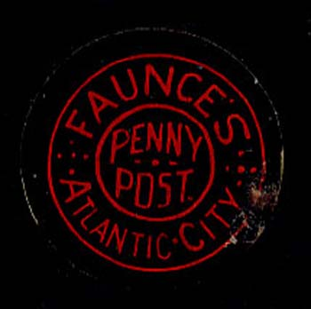
Genuine stamp
This local stamp was issued in 1885 in the colour black on red.
(Genuine, images obtained from a Siegel auction)
Genuine blue stamp
(Genuine stamps, reduced sizes)
(Genuine stamps, reduced sizes)
Note the special cancel on these stamps. The
genuine stamps have the colour blue, brown or green. They were
issued in 1860 in Chicago.
If my information is correct, reprints were made by George Hussey
in blue color.
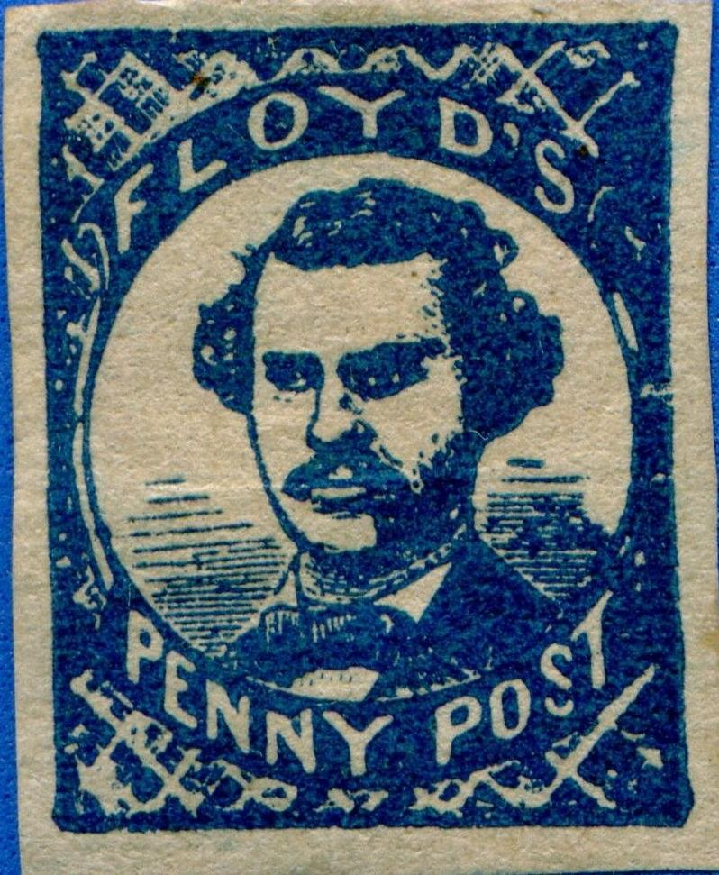
Perhaps a Hussey reprint?
The next stamps are forgeries (I presume), the background behind the circle is different from the stamps above (are these made by Allan Taylor?):
At least the following colours of the above forgery exist: blue, black, red, brown, green, grey and black on blue.
Some other forgeries with again a diffferent background pattern behind the circle:
(Forgery, reduced size)
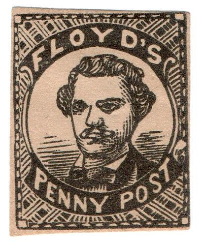
Yet another forgery type.
Other primitive forgery
Other forgeries in many bogus colors exist.
(Genuine, image obtained from a Siegel auction)
This stamp was issued in 1847 in New York. The colour of this stamp should be black on green.
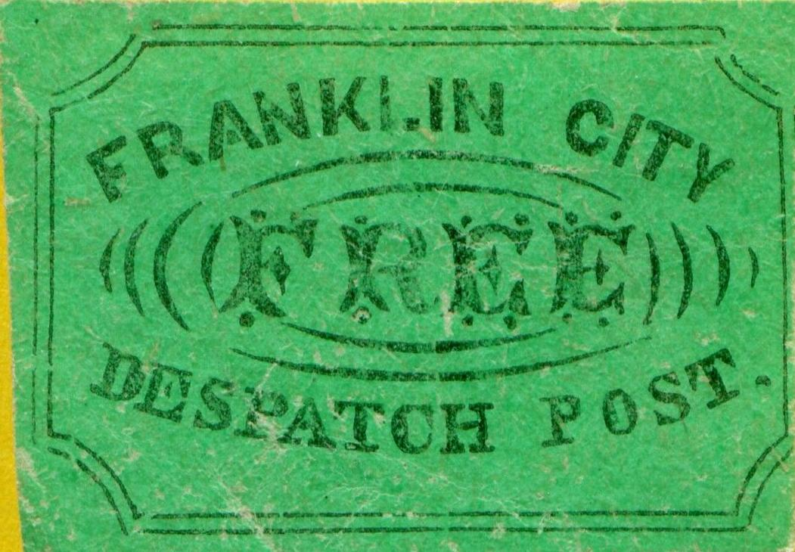
When compared to the genuine stamps, I think that the
"R" almost touches the "A" in
"FRANKLIN" in the forgery. Also note the serifs on the
text "DESPATCH POST", which the genuine stamp shown
above doesn't have. The "O" of "POST" is
rather squeezed.
Apparently, some modern forgers have forged stamps very similar to the above Scott forgeries in many bogus colors.
A very similar forgery, but with the "O" of
"POST" normal.
(Franklin City Despatch post, bogus issue of Taylor)
A forgery of the stamp of the 1847 Franklin City Despatch Post issue is shown above. These were produced by the "Prince of Forgers" S. Allan Taylor in the 1860's. They don't resemble at all the genuine stamps and can be considered totally bogus. I have also seen 2 c black on blue, 2 c red, 2 c black on violet, 2 c black, 2 c brown and 2 c grey in the same design.
Reduced size
Another bogus issue exists, with the inscription straight in a rectangle (also issued by Taylor) and the word "FREE" at the right hand side bottom. The word 'Franklin' is written in fancy letters, all the other words are written with capital letters.
There seems to exist a very rare circular stamp with inscription "FRAZER & CO" issued in 1845, however I have never seen any picture of it.
(Genuine stamps, reduced sizes)
In 1845 the above design was issued (eagle) in the colours: black on lilac, black on green, black on yellow and black on grey. Some stamps have the '&Co' manually erased due to a change in ownership:
(Genuine, reduced size, image obtained from a Siegel auction;
'Co' erased)
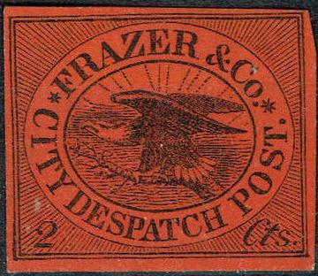
(Forgery, note that the "2" is less slanting and the
"C" of "CITY" is not horizontal)
Another forgery, made by Scott, reduced
size, the "2" is not slanting at all.
Another set of stamps with a man riding a horse exist in the colours black on red, black on blue and black on yellow (all 2 c), sorry, no pictures available at this moment.
(Genuine, image obtained from a Siegel auction)
Only this blue stamp was issued (around 1855, New York).
(Genuine)
(genuine, reduced sizes, images obtained from a Siegel auction)
There are three different designs for the G&H
local post:
1) inscription "CITY DELIVERY G&H SAN FRANCISCO"
with '5' in every corner.
2) inscription "CITY EXPRESS G&H PAID 123 Washington St.
S.E. Cor Sansome" and
3) inscription "CITY EXPRESS G&H - PAID S.E. corner
Washington and Sansome Sts.".
The last stamp exists with a cross on "H" of
"G&H" (see picture above).
(genuine?)
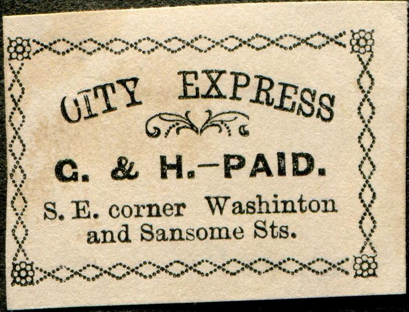
Dubious item with "." behind "PAID" and
"Washinton" instead of "Washington".
Forgeries exist, examples:
Note the very strange border of this stamp. I have seen this forgery in the colours black on blue, black on green, black on lilac and blue.
Scott forgery
The word "SAN FRANCISCO" has a "." behind it. The first "S" of this word and the "." almost touch the "5"s in the corners.
(Genuine, reduced sizes, images obtained from a Siegel auction, 2
of the 4 types)
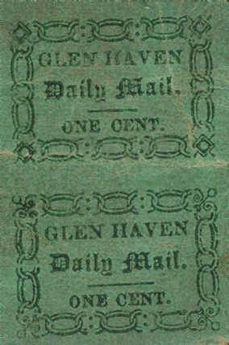
Images obtained from a Siegel auction
From 1854 onwards 4 stamps were issued, all slightly different in lettering and ornaments. All 4 had the colour black on green. Forgeries exist, example:
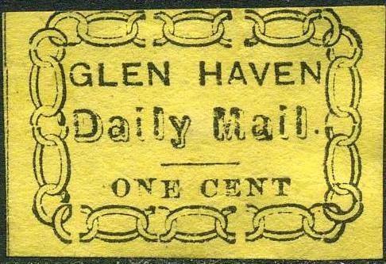
Forgery, wrong colour: red; apparently made by the forger Taylor.
I've also seen forgeries of the type with fancy "Daily Mail" in many bogus colors: silver on black, red, silver on blue, brown, red on blue, black on grey, silver on green, silver on red, red on yellow, black on lilac etc. I've been told that a certain Benson made these forgeries. Sorry, no image available yet.
(Genuine, reduced size, image obtained from a Siegel auction)
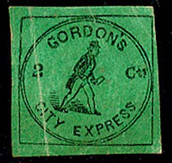
(Genuine)
Two stamps were issued: a black on green one and a black on red one. The black on red stamp is very rare (only 4 copies known with 3 still on the cover). In the genuine stamps, the apostrophe behind 'GORDON' touches the inner frameline.
Forgeries in wrong colours (most likely made by Allan Taylor):
I have seen the above forgeries in the colours black, brown, red, black on violet, black on red and black on green. The apostrophe behind "GORDON: is too low, the hat is squarish and the letter is to much upright. The '2' is too close to the left part of the circle and is also slanting backwards. The "D" of "GORDON" resembles an "O".
In this forgery, the left outer circle does not touch the left frame line, the apostrophe behind "GORDON" is too low. Sorry, no image available yet.
In this forgery, the outer circle only touches the outer square framelines at the top (in the genuine stamp, it touches at all four sides). There is no dot under the 's' of 'Cts'. I've also seen this forgery in the colors black on grey and black on violet.
In this forgery, the apostrophe behind "GORDON" does touch the inner circular frameline. The hat is different when compared to a genuine stamp. This forgery exists in several bogus colours. This is possibly a rather recent forgery.
This forgery has no outer rectangular framelines. The apostrophe behind "GORDON" is placed too low. It apparently only exists in the color gold on white.
A sixth forgery also exists, with the shape of the hat and the letter different. The 'C' of 'Cts' is much narrower than in the genuine stamps.
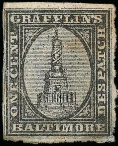
Genuine stamp; the top of the monument touches the oval. There is
a break in the upper right frameline.
Only one stamp was issued in 1856 in the colour black. In the genuine stamps there should be traces of a horizontal line through the upper side of the letter of the word "BALTIMORE".
Probably forgeries made by Hussey.
Taylor forgeries:
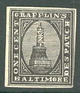
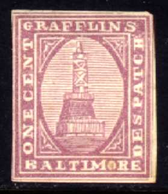
These Taylor forgeries were printed in many colors.
I've been told that the above forgeries were made by Allan Taylor. I've seen the colours black, red, brown, green and violet of these Taylor forgeries. Of course, any colour other than black is bogus.
Another forgery with no serifs on any of the letters. I've seen
it with a manuscript "G" cancel several times (as shown
above). It was made by A.C.Roessler according to the Penny Post
Journal.
Issued in 1898. This could be a bogus issue. The value is 25 c blue.
Guy's City Despatch, Philadelphia, issued stamps in 1879 (two values in the colours red or blue). These stamps are relatively common.
(Reduced size, image obtained from a Siegel auction)
Souvenir sheet issued for the Atlantic City Stamp Club in 1939 with a picture of the above stamp (beware of cutouts from this sheet offered as genuine stamps!):
A stamp in a circular design with inscription "H&B PENNY POST ATLANTIC CITY" was issued in 1886 in the colour black on red (sorry, no picture available yet).
(Genuine, with adress "13 Court St.", images obtained
from a Siegel auction)
(Genuine, adress omitted, images obtained from a Siegel auction)
(Genuine, with overprint "CITY DESPATCH OFFICE 23 State
St.", image obtained from a Siegel auction)
(Genuine, image obtained from a Sandafayre auction)
(Reduced size, image obtained from a Sandafayre auction)
This stamp was initially issued in blue and red in 1844 with inscription '13 Court St.'. Due to change in adress some overprints with "CITY DESPATCH OFFICE 23 STATE St." exist (both blue and red). Later the adress was completely omitted (only the blue stamps exist in this state). I have also seen stamps with the adress changed manually.
Probably a forgery made by Allan Taylor.
It exists in orange, red and blue. Note that the line approaching
the "S" of "BOSTON" (representing the fold in
the letter) stops at the dot
I've seen many forgeries (at least 8 different kinds), also in bogus colors and on bogus colored paper.
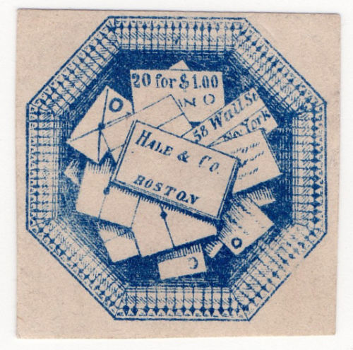
Dubious item: "Co" too narrow and "13" too
far from "Court". I've also seen this forgery in the
color red. Next to it the same forgery, but without "13
Court St".
Forgery in the color green.
Forgery attributed to Scott; the "2" of "20"
is too small. The "$" is awkward.
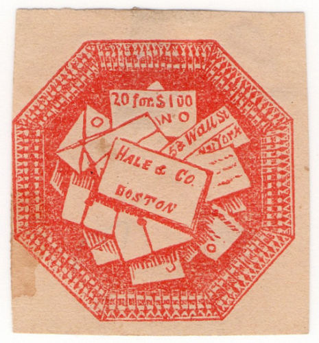
I presume this is a forgery, the circle at the lowest envelope is
here a hook.
(Genuine, reduced size, image obtained from a Siegel auction;
http://www.siegelauctions.com/1999/817/yf817188.htm )
Only one stamp was issued by the "Hall & Mills' Despatch Post" in 1847; the colour is black on green.
Stamps with inscription "HALL & NEILL'S Free DESPATCH POST." are bogus issues made by Taylor.
Probably a Scott forgery
I know that Scott made forgeries of this stamp. I'm not sure if the above stamp is such a Scott forgery. The word "FREE" is too large when compared to a genuine stamp (the "F" of "FREE" starts well before the first "L" of "HALL" and the second "E" of "FREE" passes well beyond the first "L" of "MILL"). Also, there is a very small distance between the words "Despatch" and "Post".
I've also seen a 'reproduction of an original stamp', which has the lettering in the correct position. Sorry, no image available.
Third forgery, reduced size
I've seen other forgeries (made by Benson?) in many colors, with a "." behind "Post". The "F" of "FREE" is placed slightly to the right of the center of "LL" of "HALL".
Fourth forgery, reduced size
Yet another forgery has the word 'Post' too far from the right hand border. The second "E" of "FREE" is placed under the "I" of "MILLS". I've seen this forgery in the colors grey on red, gold, gold on blue, gold on orange, gold on light blue and gold on black.
{kind=link}
{kind=link}
{kind=link}
{kind=link}
{kind=link}
{kind=link}
{kind=link}
{kind=link}
{kind=link}
{kind=link}
{kind=link}
{kind=link}